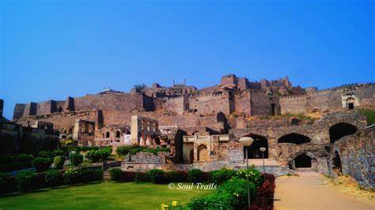

GOLCONDA FORT

Golconda Fort is located in the western part of Hyderabad city and is about 9 km from the Hussain Sagar Lake. The outer fort occupies an area of three square kilometers, which is 4.8 kilometers in length.
It was originally known as Mankal, and built on a hilltop in the year 1143. It was originally a mud fort under the reign of Rajah of Warangal. Later it was fortified between 14th and 17th centuries by the Bahmani Sultans and then the ruling Qutub Shahi dynasty. Golconda was the principal capital of the Qutub Shahi kings. The inner fort contains ruins of palaces, mosques and a hill top pavilion, which rises about 130 meters high and gives a bird’s eye view of other buildings.
Golconda fort is undoubtedly one of most magnificent fortress complexes in India. The history of Golconda Fort goes back to early 13th century, when it was ruled by the Kakatiya’s followed by Qutub Shahi kings, who ruled the region in 16th and 17th century. The fortress rests on a granite hill 120 meters high while huge crenellated ramparts surround this structure.
It was initially called Shepherd’s Hill, meaning Golla Konda in Telugu while according to legend, on this rocky hill a shepherd boy had come across an idol and the information was conveyed to the ruling Kakatiya king at that time. The king constructed a mud fort around this holy spot and after 200 years, Bahamani rulers took possession of the place. Later the Qutub Shahi kings converted this into massive granite fort extending 5km in circumference. The fort is considered a mute witness to historic events. The Qutub Shahis reign at Golconda ended in 1687 when it was run over by Mughal emperor Aurangzeb, who intentionally left it in ruins
Golconda still boasts of mounted cannons, four drawbridges, eight gateways, and majestic halls, magazines, stables etc. The outermost enclosure is called Fateh Darwaza meaning Victory gate, after Aurangzeb’s army marched successfully through this gate. At Fateh Darwaza one can witness fantastic acoustical effects, which is one among the many famous engineering marvels at Golconda. Clapping your hand at a certain point near the dome entrance reverberates which is heard clearly at the hill top pavilion, almost one kilometer away. This served as a warning note to the inhabitants of the fort of any impending danger, Ofcourse it now amuses visitors. The fort gains an impressive place among the architectural marvels and heritage structures of India and is a testimony to Hyderabad’s glorious past.
How to reach:

By Air
The nearest airport is in hyderabad

By Train
The nearest railways is in hyderabad

By Road
Golkonda, the most famous tourist destination in Hyderabad, can be used as a landmark. A bus,cab,local rickshaw can also be taken to reach the capital.